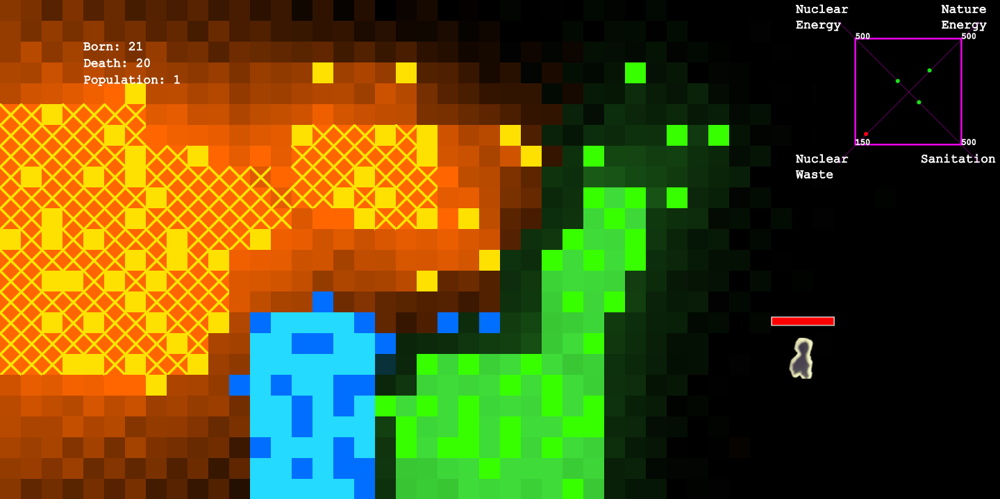

Planet X
Planet X was created based on the concept from Will Android Dream of Electronic Sheep? Players get to explore the notion of 'balance' in the world we live in, in spite of the game's background set in A.C. 2049 in a parallel university from our world.
Game setting:
On Planet X, there are three kinds of resources: TREE, WATER and ATOMIC ENERGY for the player to utilize. After the energy respectively accumulated reaches a balance, there will be Planet X inhabitants coming out. However, once the balance is off, for example there are too much waste accumulated that it becomes detrimental to the inhabitants, there will be no more babies born. The moment that the population declines to 0, Planet X turns dead again, and the player will be noticed of the time duration that they brought Planet X back to life, as well as the total population that were born into the Planet X.
a video demo if the playable version can't be accessed: